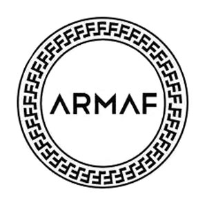

Armaf is a new fragrance brand. The earliest edition was created in 2015 and the newest is from 2023. Armaf fragrances were made in collaboration with perfumers Christian Provenzano, Mathieu Nardin, Ali Asgar Fakhruddin, Arturetto Landi, Jordi Fernández, Quentin Bisch and Christophe Raynaud.
Country: United Arab Emirates
Main Activity: Fragrances